Important to learn · exam keywords
Arrow keys to move · Esc to close
The whole certification as bullets and pictures, with the official exam keywords and the real situations behind each one.
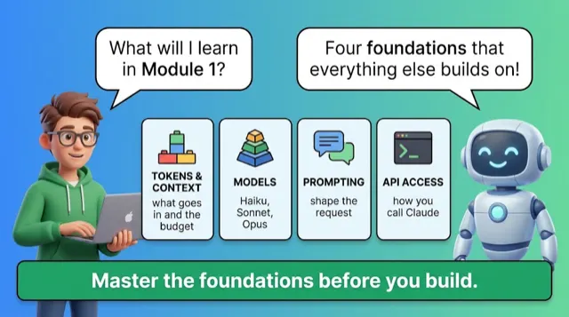
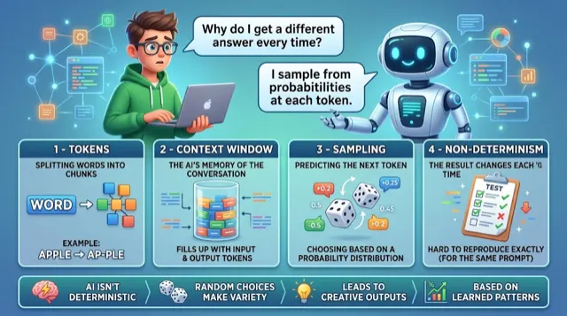
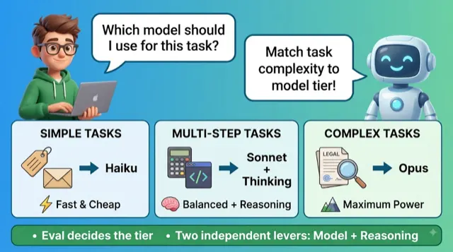
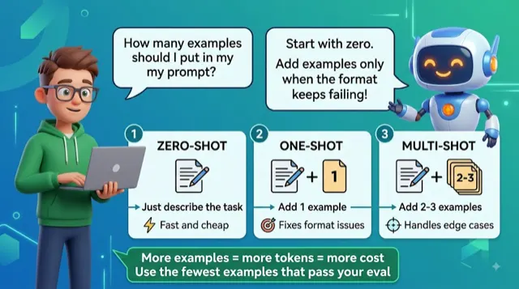
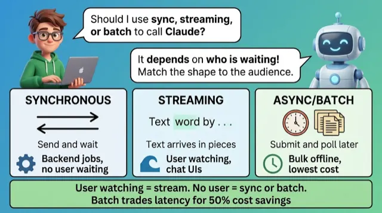
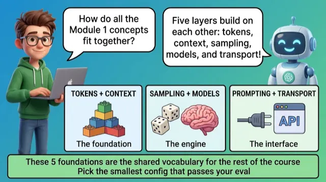
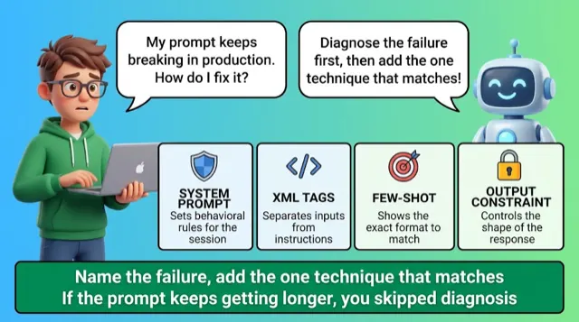
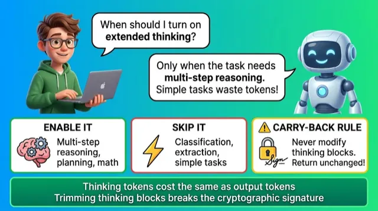
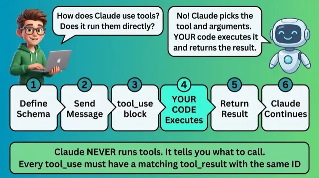
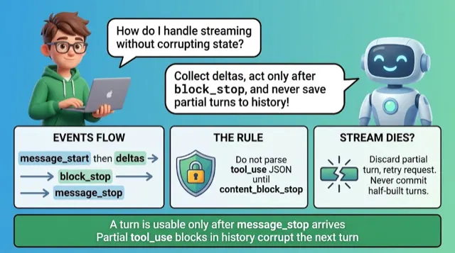
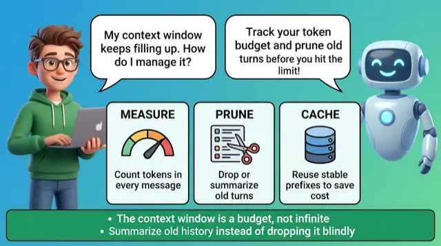
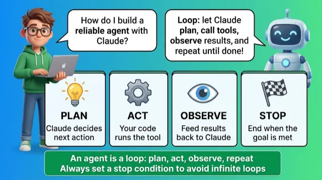
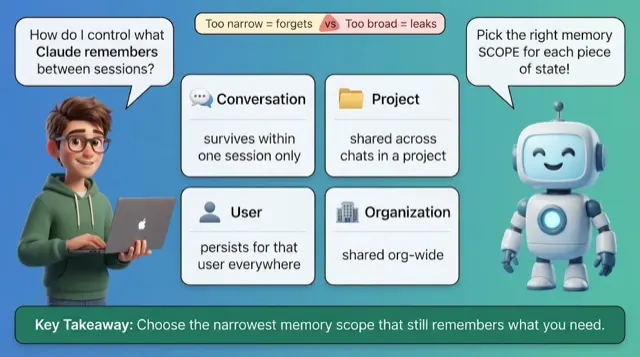
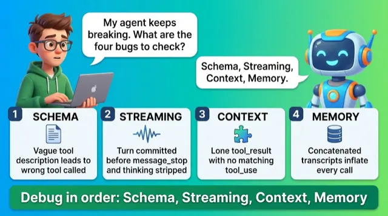
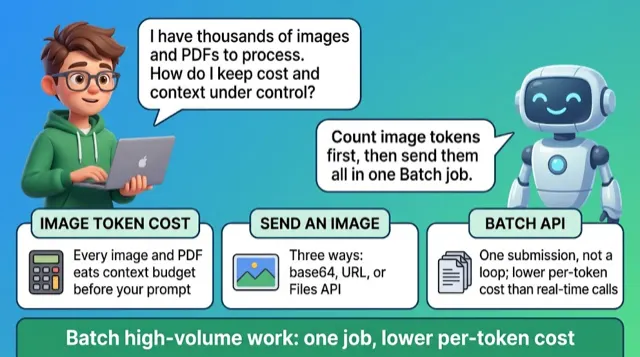
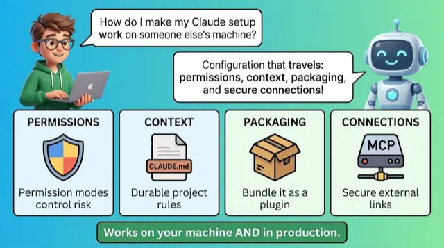
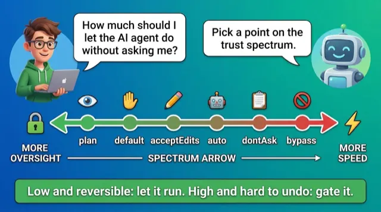
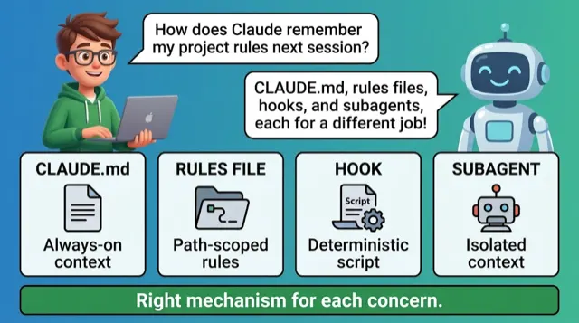
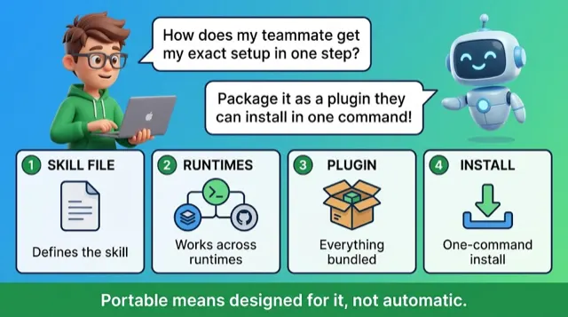
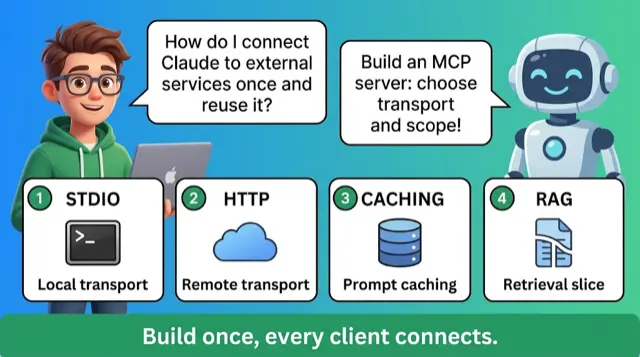
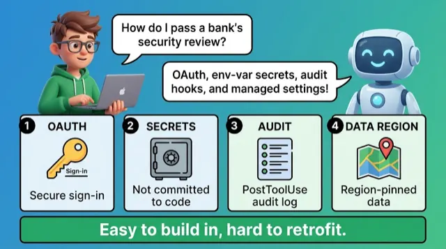
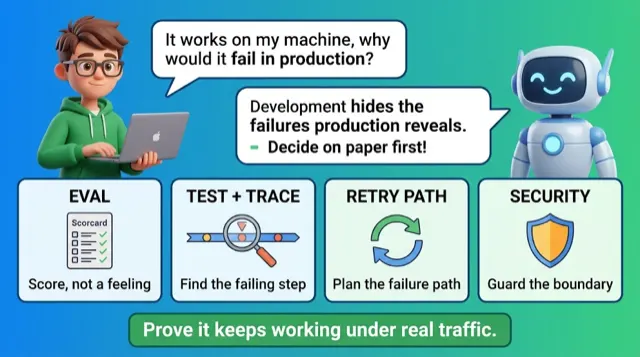
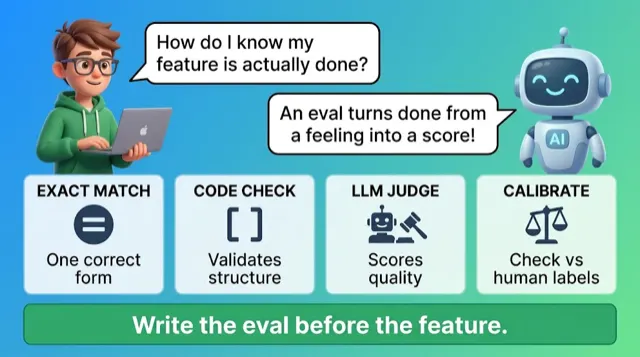
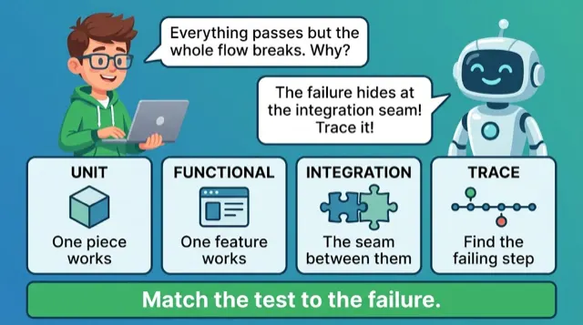
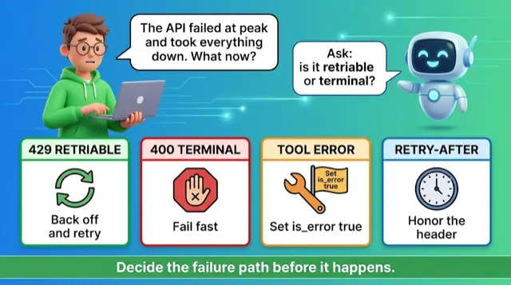
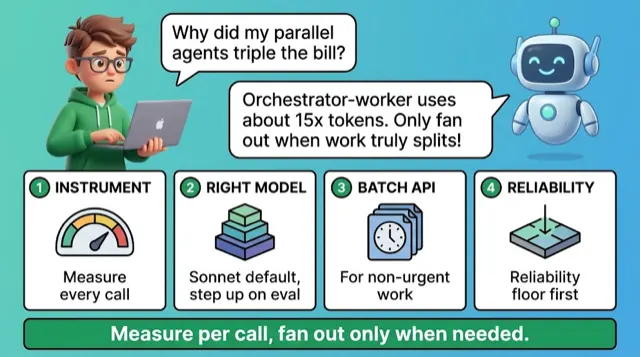
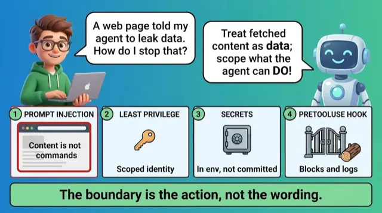
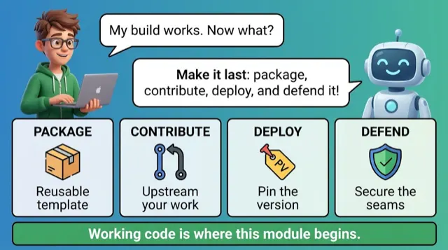
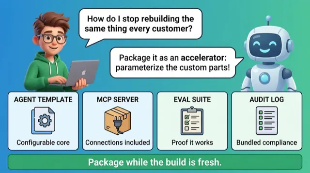
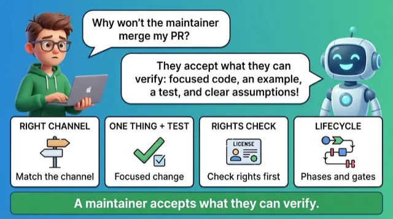
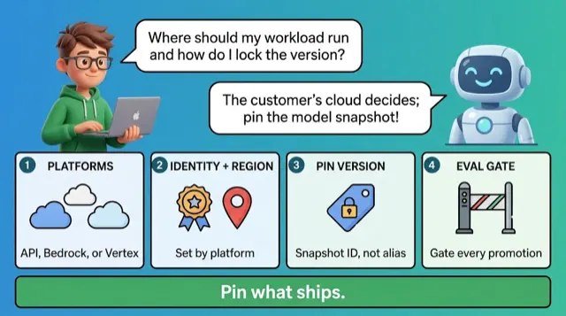
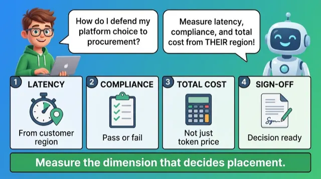
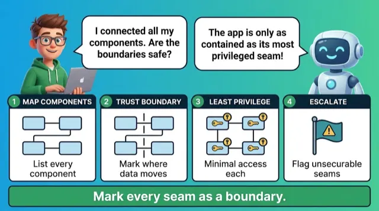